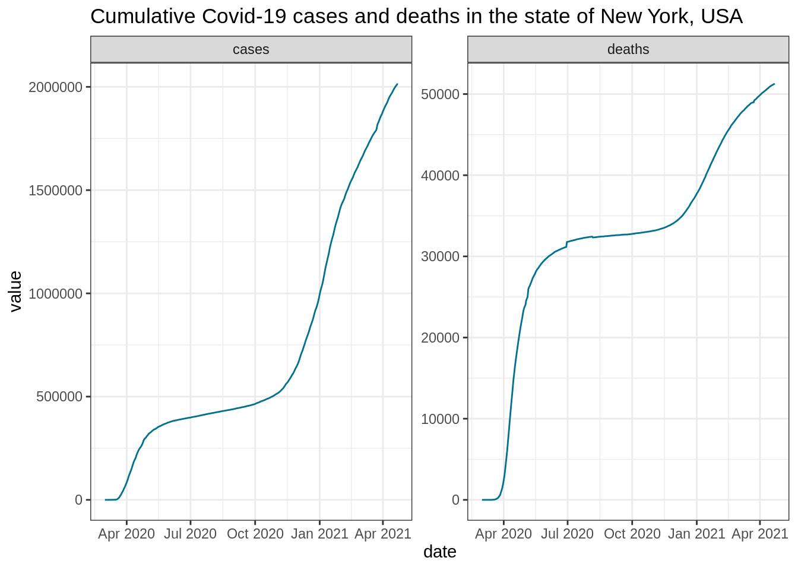

Chapter 7 Visualizations using ggplot2
covid_ny %>%
gather(key, value, cases, deaths) %>%
ggplot(aes(x = date, y = value)) +
facet_wrap(~key, scales = "free_y") +
geom_line(color = "#02718f") +
labs(title = "Cumulative Covid-19 cases and deaths in the state of New York, USA") +
theme_bw()